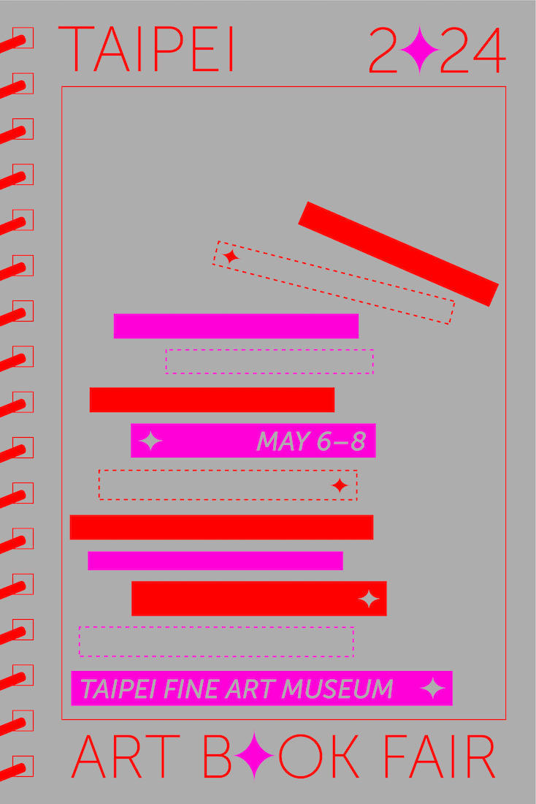
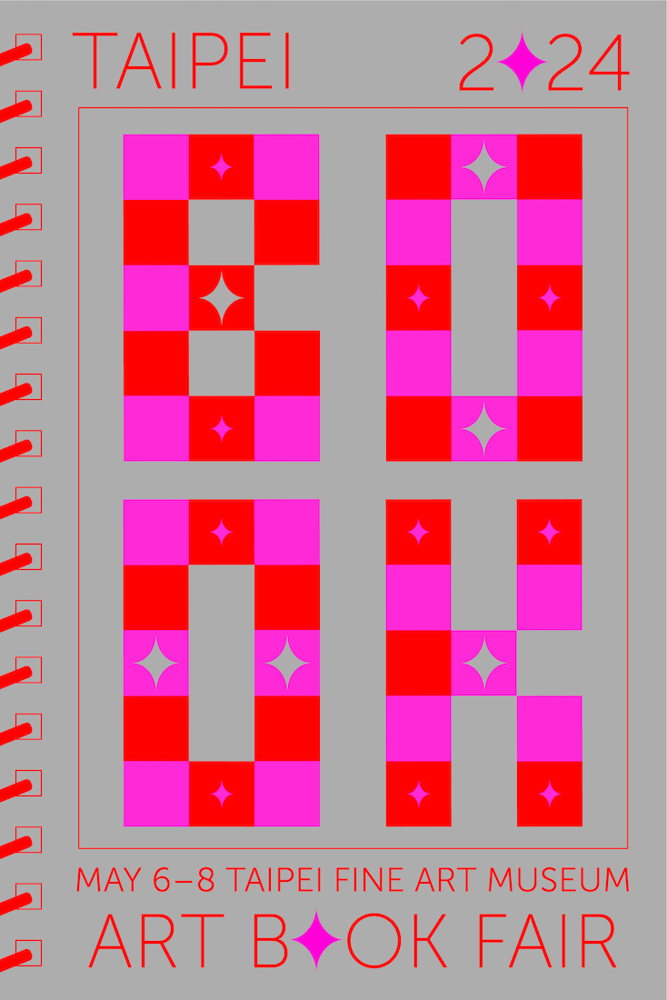
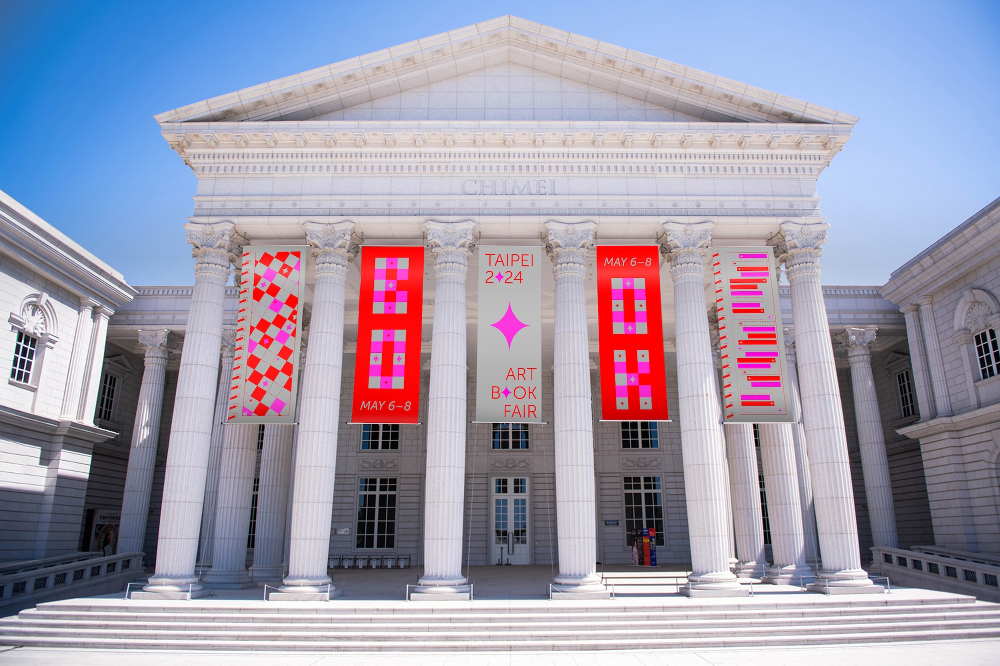
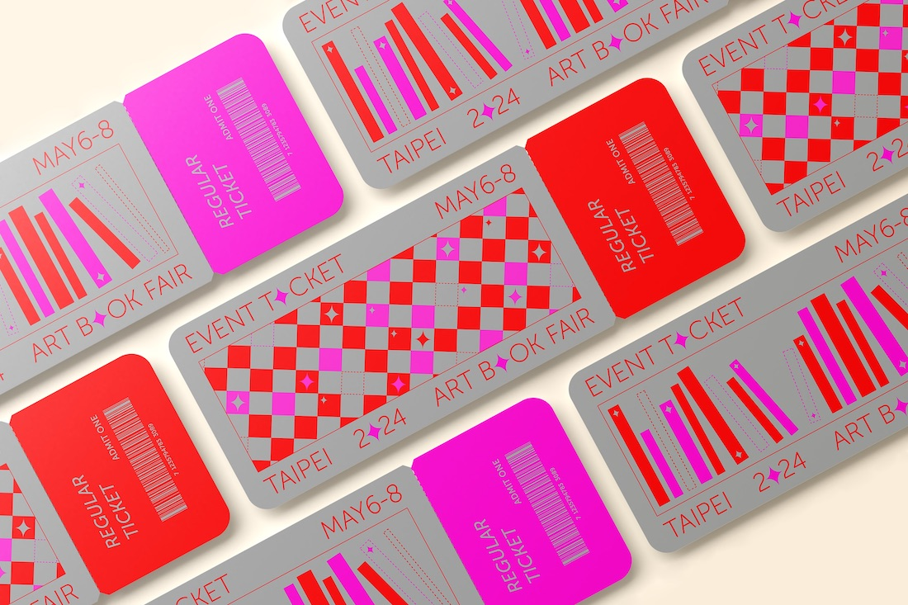
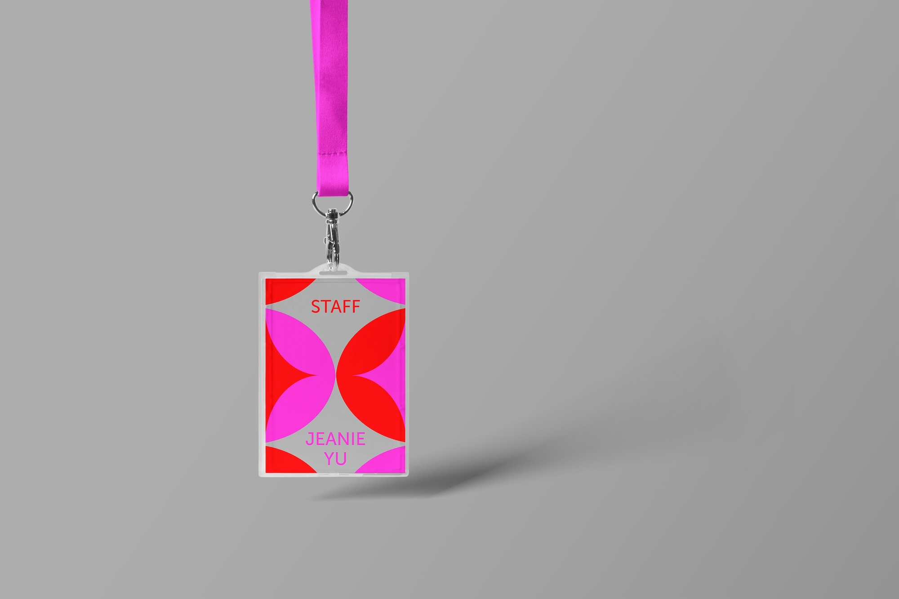
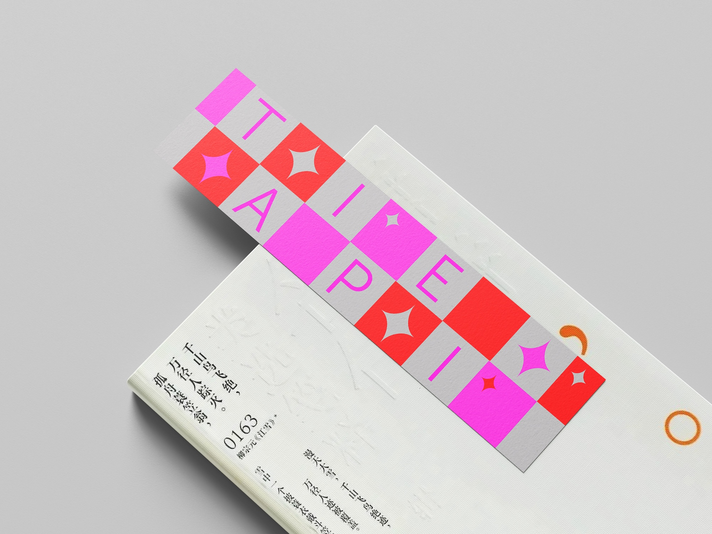
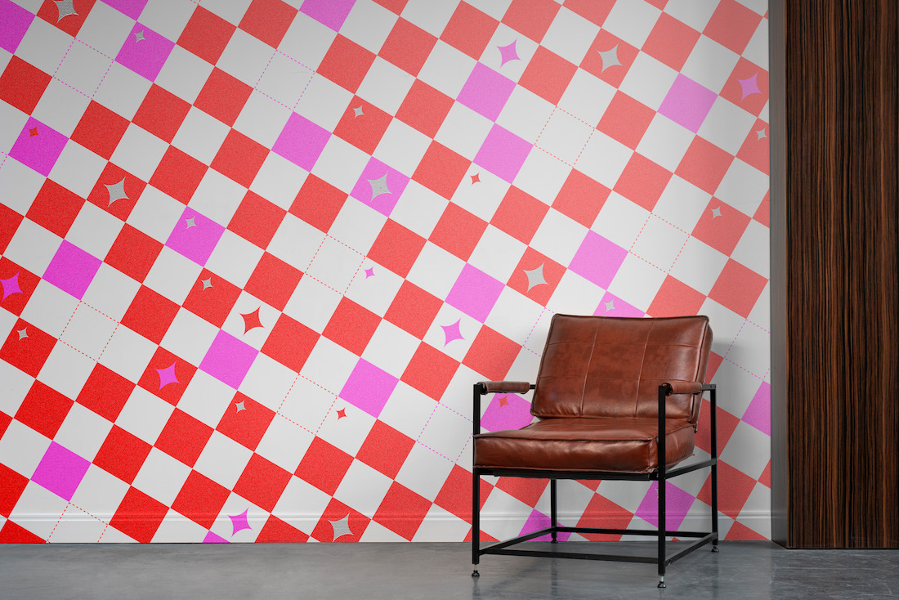

A poster series and identity design for the Taipei Art Book Fair, held at the Taipei Fine Art Museum, features a dynamic and playful design with motion graphics that uses vibrant colors and geometric patterns. The composition of the poster was inspired by a spiral-binded fairytale with the title of the book fair replacing the title of the book. The poster series and the book fair identity is divided into two primary sections. The first half showcases art books in bookshelves, interspersed with playful star icons that add a sense of art fairytale. This arrangement suggests the rhythm and vibrancy of the artistic books and fairytales celebrated at the fair. The second half features a checkerboard pattern with alternating red and magenta squares, overlaid with dashed lines and additional star elements, reinforcing the identity of playful exploration. By developing an interactive website, people could create their own poster by dragging elements onto a poster mockup to engage with the identity and celebrate art and literature.







